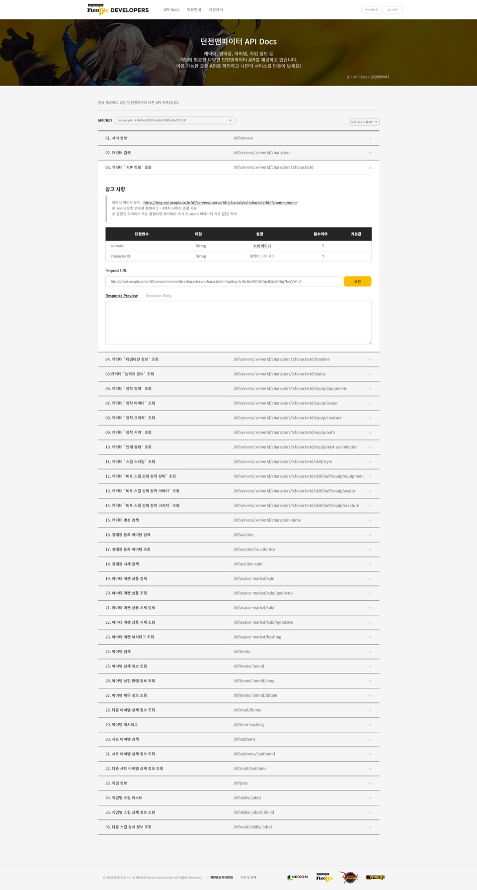
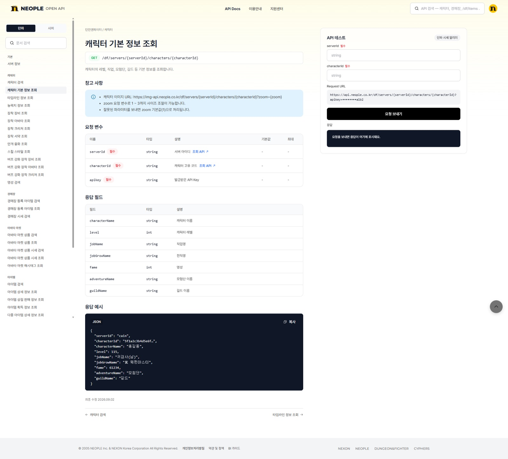
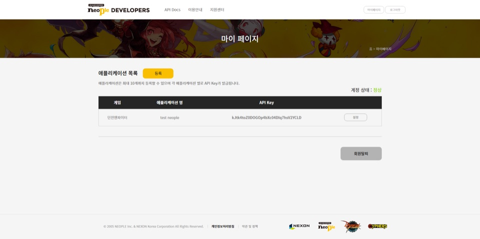
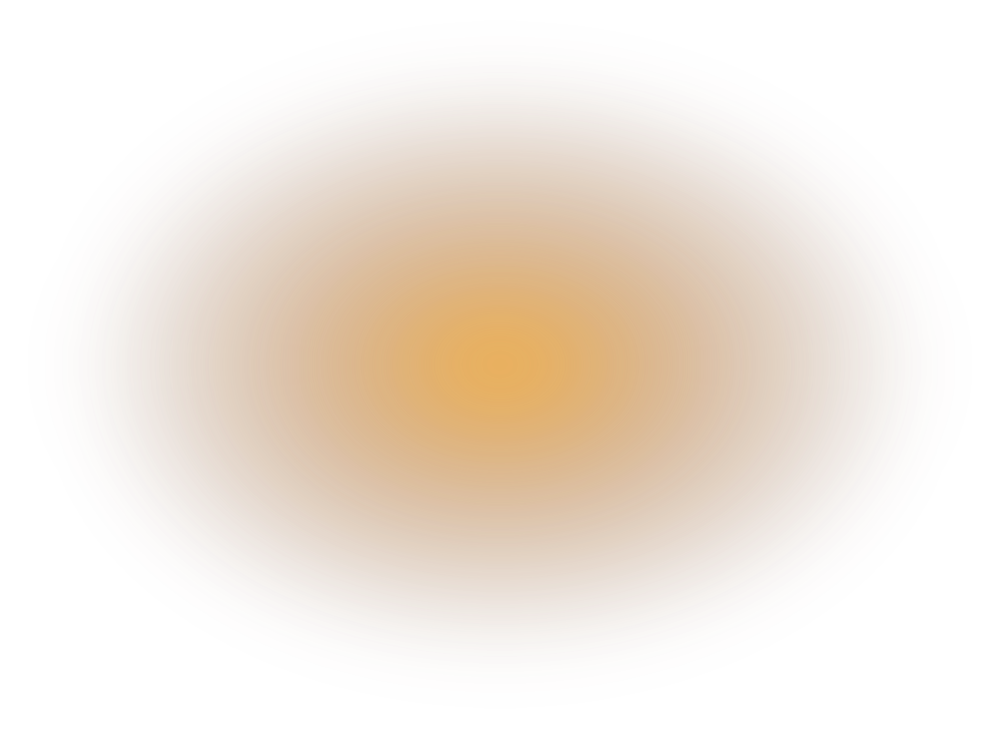
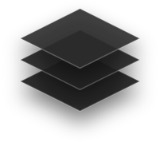

04/ 06 steps
Key Screen · Design System · Improvement Prompt · Claude Code
메인 시안부터 화면 생성까지 완료했습니다.
Neople Developers의 사용자 · 관리자 화면 설계 및 구현.
메인 화면을 Figma로 먼저 작업해 톤과 무드를 잡고, 이를 기준으로 라이브 서비스의 개선 사항을 프롬프트로 정리했습니다.
기존 디자인 시스템과 함께 Claude Code에 적용해 화면을 생성하고,
코드 환경에서 레이아웃 · 컴포넌트 · 디테일을 직접 개선하였습니다.
01Key Screen
메인 화면을 Figma로 먼저 작업해 전체 톤과 무드를 기준으로 설정
02Design System
기존 디자인 시스템과 컴포넌트 규칙을 구현 기준으로 사용
03Improvement Prompt
시안을 기준으로 라이브 서비스의 개선 포인트를 정리해 AI에게 구현 프롬프트 작성을 요청
04Claude Code
정리한 프롬프트와 디자인 시스템을 참조해 사용자 · 관리자 화면 생성
05UI Refinement
코드 환경에서 레이아웃 · 컴포넌트 · 디테일 직접 수정
06Figma Sync
유지보수를 고려해 구현된 화면을 Figma 디자인 파일로 재구성 예정
AS-IS

TO-BE

디자인 시스템 기반으로 Claude Code가 생성하고 코드에서 다듬은 화면 · 데이터는 블러 처리
좌측 트리와 검색으로 원하는 API에 바로 이동
메서드 · URL을 상단에, 변수와 응답은 표로 정리
문서를 보며 값 입력 후 즉시 요청 · 응답 확인
AS-IS

TO-BE

디자인 시스템 기반으로 Claude Code가 생성하고 코드에서 다듬은 화면 · 데이터는 블러 처리
게임 · 호출 수 · 생성일을 카드 하나로 비교
빈 카드로 남은 개수 표시, 바로 생성으로 연결
목록에서는 숨기고 상세에서 보기 · 복사 · 재발급

Progress
04/ 06 steps
Key Screen · Design System · Improvement Prompt · Claude Code
메인 시안부터 화면 생성까지 완료했습니다.
UI Refinement
코드 환경에서 레이아웃 · 컴포넌트 · 디테일을
직접 다듬고 있습니다.
Figma Sync
유지보수를 고려해 구현된 화면을
Figma 디자인 파일로 재구성할 예정입니다.

디자인 시스템을 AI 개발 환경에 연결하고, 생성된 결과물을 코드에서 직접 개선하며
디자인과 구현 사이의 간격을 줄인 작업